AnyPortrait > マニュアル > マスクとカスタムシェーダー
マスクとカスタムシェーダー
1.6.0
「マスク」機能を活用すれば、基本的な「アルファマスクによるクリッピング」だけでなく、さまざまな効果を作ることが可能です。
マスク処理中に使用されるシェーダを置き換えたり、自分で作成する方法を学びましょう。
マスクを生成するシェーダを変更
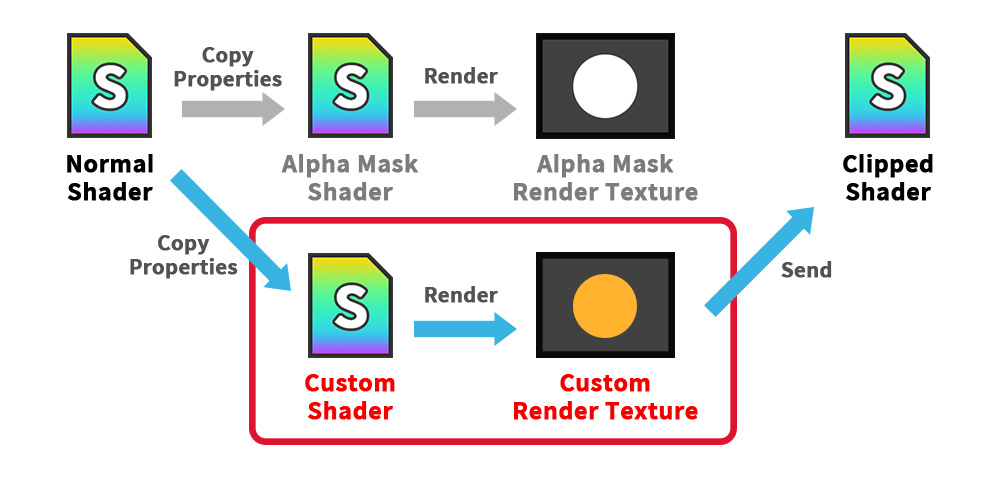
マスクを作成するプロセスでは、デフォルトでは「アルファマスクシェーダー（Alpha Mask Shader）」が使用されます。
シェーダーを変更すると、「レンダーテクスチャ」が異なるように生成されます。
シェーダーによってレンダーテクスチャがどのように変わるかを確認しましょう。
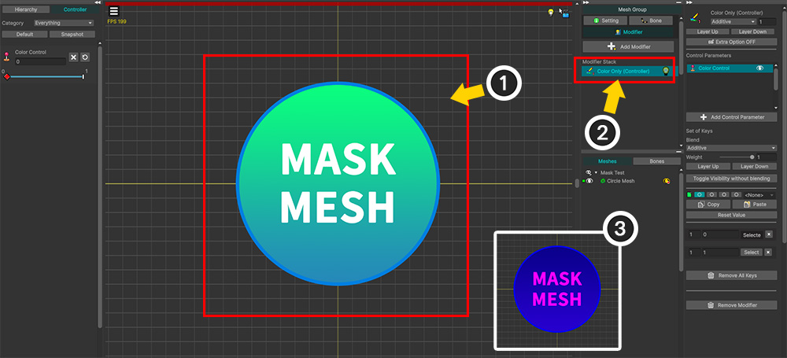
(1) マスクレンダリングテクスチャをテストするためにメッシュを準備しました。
(2) モディファイアによるレンダリングテクスチャの変化を確認するために「Color Only（Controller）」モディファイアを追加しました。
(3) 制御パラメータによってメッシュの色が変わります。
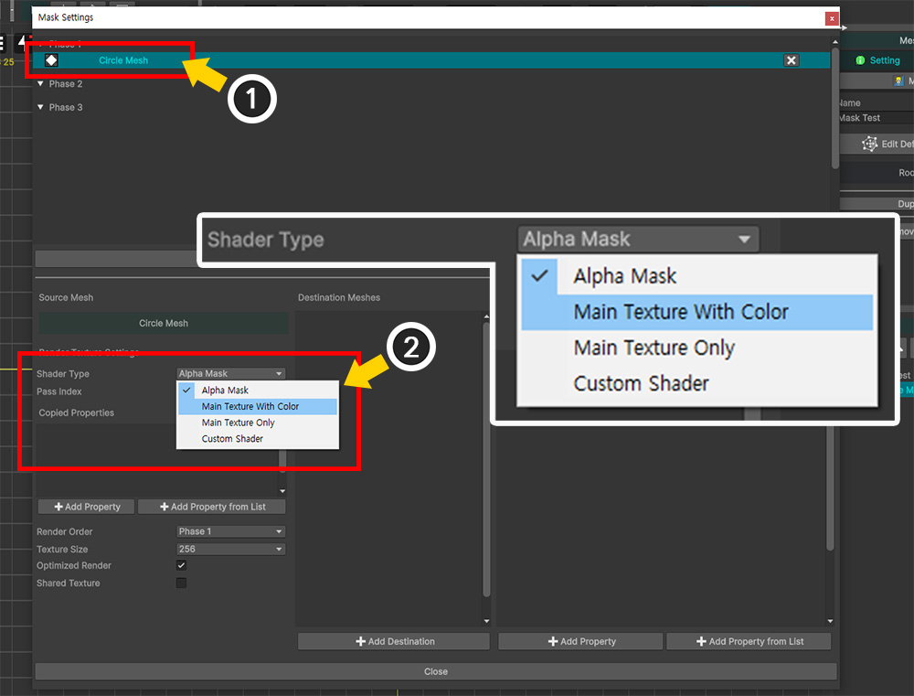
(1) 「マスク設定ダイアログ」を開き、作成したメッシュの「マスクデータ」を作成します。
(2) 「Shader Type」オプションの値を1つずつ選択してテストします。デフォルトの「Alpha Mask」を選択してみましょう。
「Bake」をしてUnityシーンでテストをしましょう。
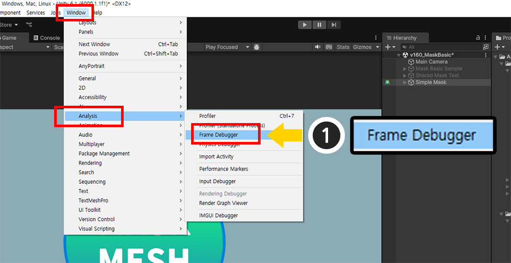
この例では、生成されたレンダリングテクスチャを「フレームデバッガ」で確認しましょう。
(1) Unityメニューから「Window > Analysis > Frame Debugger」を実行します。
（Unityバージョンによってメニューパスが異なる場合があります。）
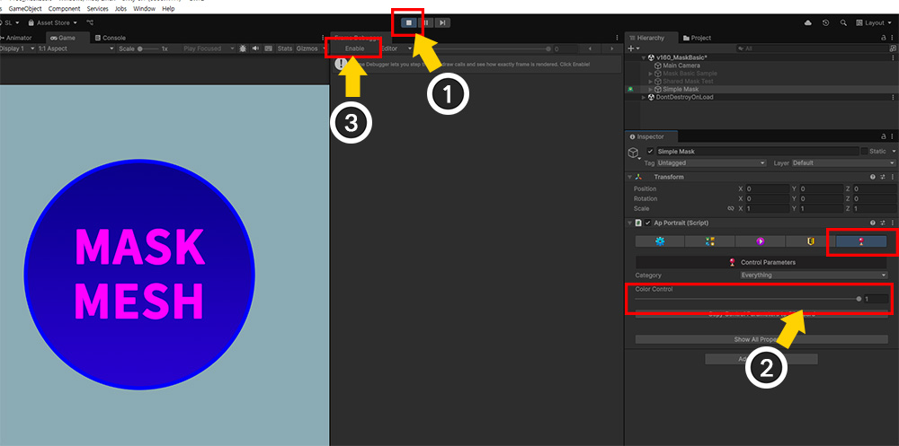
(1) ゲームを実行します。
(2) 制御パラメータを調整してメッシュの色を変更します。
(3) 「Frame Debugger」の「Enable」ボタンを押します。
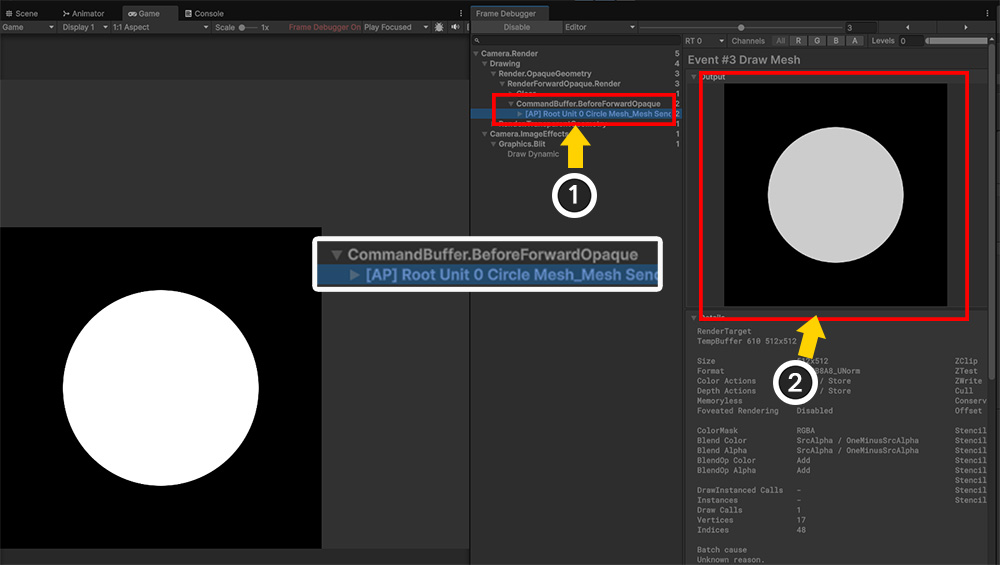
ゲームが一時停止し、レンダリングの各ステップを確認できます。
(1) マスクは「コマンドバッファ」を介して生成されるため、レンダリング処理中の「コマンドバッファ」が動作する項目を見つけて選択します。
「コマンドバッファ」の名前が「AP + Root Unit Name + Mesh Name + Mask Processing」と命名されているので、これを見つけることができます。
(2) 「コマンドバッファ」の結果を確認すると、「レンダリングテクスチャ」をターゲットにマスクがレンダリングされたことがわかります。
先ず、マスクの「Shader Type」を「Alpha Mask」として選択したため、レンダリングテクスチャは白黒の画像としてレンダリングされる。
その場合は、「Shader Type」を変更してレンダリングテクスチャがどのように変わるかを確認しましょう。
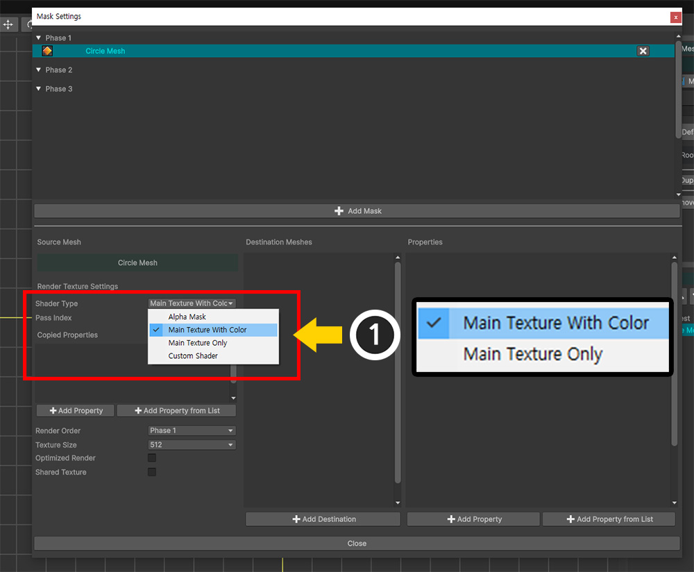
(1) 再度「マスク設定ダイアログ」を開き、「マスクデータ」を選択した後、「Shader Type」を「Main Texture With Color」と「Main Texture Only」に一度選択して結果を確認しましょう。
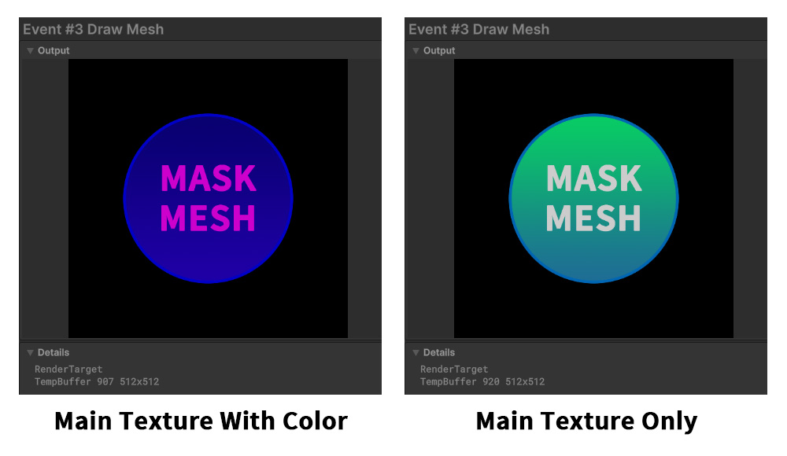
ゲームを実行してフレームデバッガを実行してコマンドバッファの結果を確認すると、上記のようにマスクが異なるようにレンダリングされることがわかります。
まとめると、各「Shader Type」は次のように動作することがわかります。
- Alpha Mask：モディファイアの色演算を含む結果のAlphaチャンネルの値がグレースケール（Grayscale）でレンダリングされます。
- Main Texture With Color：レンダーテクスチャにモディファイアの色演算が適用されます。画面にレンダリングされるのと同じです。
- Main Texture Only：モディファイアの操作は無視され、元の画像の色だけがレンダーテクスチャに反映されます。
カスタムマスクシェーダー
マスクを作成するシェーダを変更すると、レンダリングテクスチャが異なるようにレンダリングされることを前の例で確認しました。
今回はカスタムシェーダを直接作成する状況とその方法を見てみましょう。
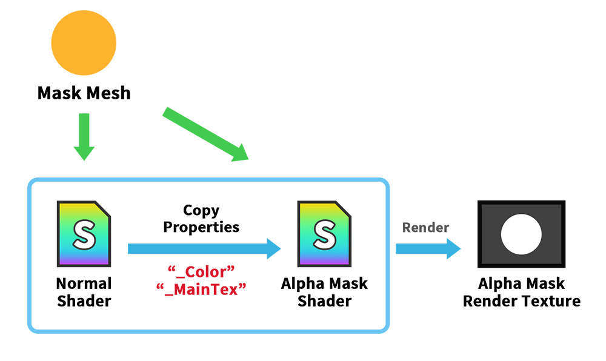
マスクとしてレンダリングテクスチャをレンダリングする基本的なプロセスは上記のとおりです。
マスクメッシュは「ノーマルシェーダー（Normal Shader）」でレンダリングし、同時に「アルファマスクシェーダー（Alpha Mask Shader）」で「レンダーテクスチャ」をレンダリングします。
「アルファマスクシェーダ」が動作するには、「_Color」と「_MainTex」プロパティに値を入力する必要があります。
これらの値は、モディファイアやアニメーションなどの影響を受けるため、リアルタイムで変更される可能性があるため、更新ごとに「通常シェーダ」に適用される値をそのままコピーして適用します。
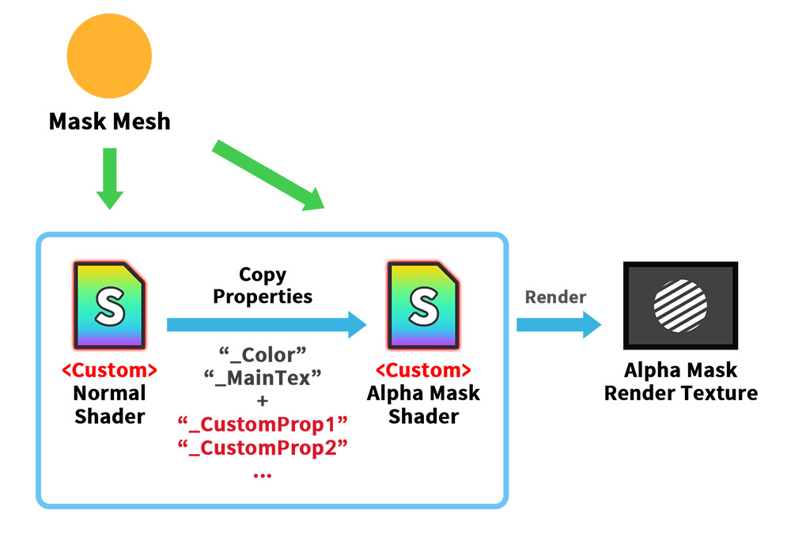
もし「マテリアルライブラリ」（関連ページ）を使ってメッシュを「カスタムシェーダ」にレンダリングするとしましょう。
このカスタムシェーダの結果がマスクに影響を与える場合、「アルファマスクシェーダ」もそれに合わせて書き直す必要があります。
特に、「カスタムシェーダ」が追加のプロパティによってレンダリングされる場合、「アルファマスクシェーダ」もそのプロパティを受け取る必要があります。
したがって、マスク生成シェーダが正常に動作するためには、元のシェーダからプロパティの値をコピーする必要があります。
次の例では、「カスタムシェーダ」をメッシュに適用し、それに合わせて「カスタムマスクシェーダ」をさらに作成するプロセスについて説明します。
メモ
「カスタムマスクシェーダ」のために、「ノーマルシェーダ」を常にカスタムシェーダとして作成する必要はありません。
次の例では、デフォルトプロパティ（ 「_Color」、 「_MainTex」）以外の追加プロパティをコピーする必要がある状況を示すために、2つの「カスタムシェーダ」が必要でした。
「ノーマルシェーダ」と「マスクシェーダ」に「カスタムシェーダ」を適用することは状況によって異なり、自由に活用できます。
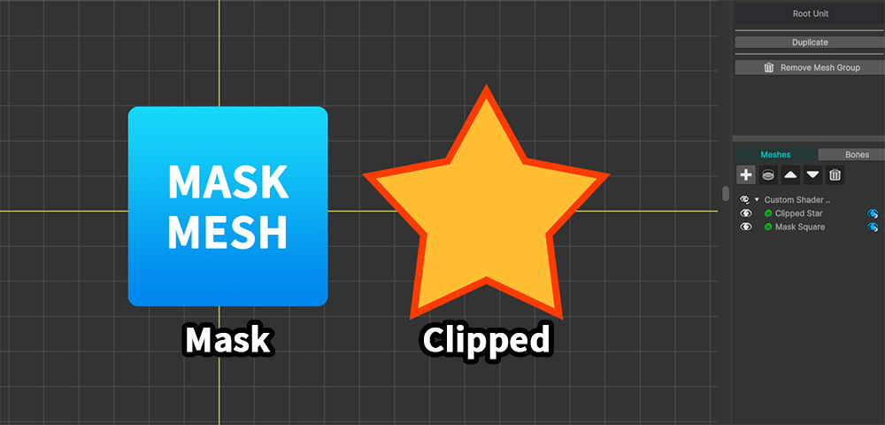
1つのマスク用メッシュ(「Mask Square」)と1つのクリッピングされるメッシュ(「Clipped Star」)を用意しました。
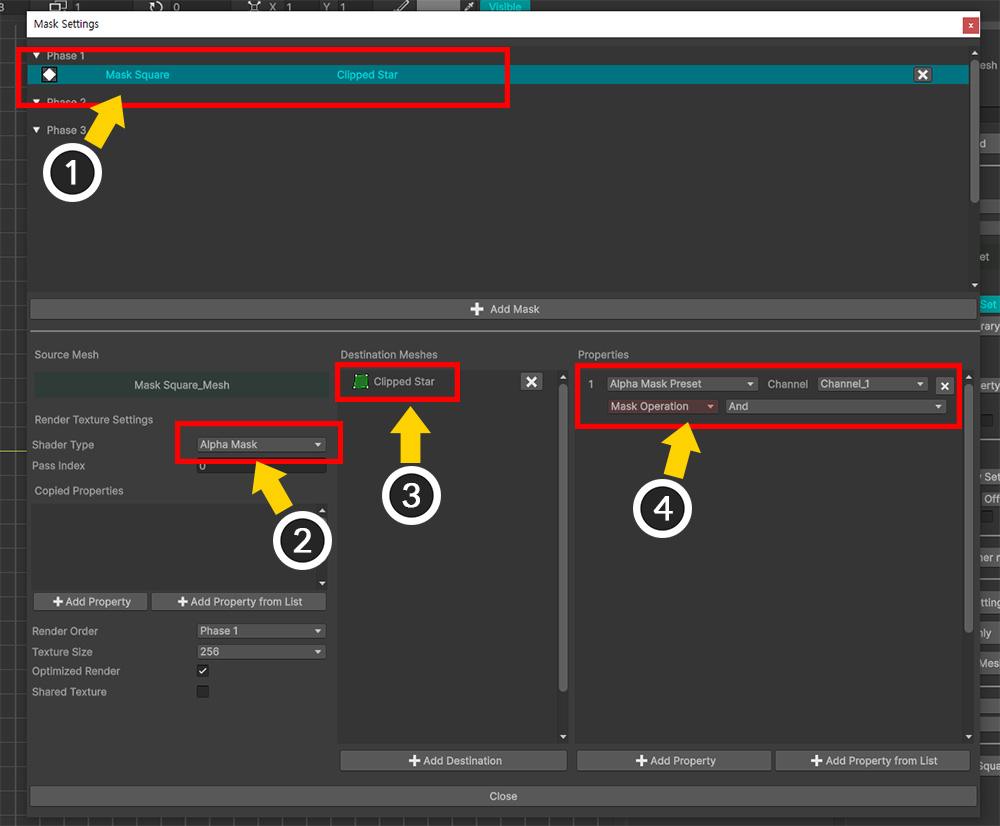
(1) 「マスク設定ダイアログ」を開き、マスクメッシュ「Mask Square」の「マスクデータ」を追加します。
(2) 「Shader Type」は、デフォルトの「Alpha Mask」に設定されます。
(3) 対象メッシュとして「Clipped Star」を追加します。
(4) 渡されるプロパティとして「Alpha Mask Preset」を追加します。
このプロセスまで完了すると、通常のアルファマスククリッピングが実行されます。
それでは、「Mask Square」が「カスタムシェーダー」によってレンダリングされるようにしましょう。
次のシェーダコードは、基本的な「Unlit」シェーダに基づいて作成されており、「画面座標系を介してマッピングされるパターンテクスチャがAlpha値に影響する内容」が含まれています。
メモ
カスタムシェーダの作成方法については、「関連ページ」を参照してください。
Shader "Custom Shader/Screen Space Pattern (Alpha Blend)"
{
Properties
{
_Color ("2X Color (RGBA Mul)", Color) = (0.5, 0.5, 0.5, 1.0)
_MainTex ("Main Texture (RGBA)", 2D) = "white" {}
// スクリーン効果のためのパターンテクスチャとスクロール速度
_PatternTex ("Pattern Texture (Grayscale)", 2D) = "white" {}
_PatternRepeat ("Pattern Repeat", float) = 1.0
_ScrollSpeed ("Scroll Speed", float) = 0.2
}
SubShader
{
Tags { "RenderType" = "Transparent" "Queue" = "Transparent" "PreviewType" = "Plane" }
Blend SrcAlpha OneMinusSrcAlpha
LOD 200
Pass
{
Tags { "LightMode" = "ForwardBase" }
ZWrite Off
CGPROGRAM
#pragma vertex vert
#pragma fragment frag
#include "UnityCG.cginc"
struct appdata
{
float4 vertex : POSITION;
float2 uv : TEXCOORD0;
};
struct v2f
{
float2 uv : TEXCOORD0;
float4 vertex : SV_POSITION;
// 画面効果のための画面座標系
float4 screenUV : TEXCOORD1;
};
sampler2D _MainTex;
float4 _MainTex_ST;
half4 _Color;
// スクリーン効果のためのUV
sampler2D _PatternTex;
float _PatternRepeat;
float _ScrollSpeed;
v2f vert (appdata v)
{
v2f o;
o.vertex = UnityObjectToClipPos(v.vertex);
o.uv = TRANSFORM_TEX(v.uv, _MainTex);
// 画面UVの計算
o.screenUV = ComputeScreenPos(o.vertex);
return o;
}
fixed4 frag (v2f i) : SV_Target
{
fixed4 col = tex2D(_MainTex, i.uv);
#if UNITY_COLORSPACE_GAMMA
col.rgb *= _Color.rgb * 2.0f;
#else
col.rgb *= _Color.rgb * 4.595f;
col.rgb = pow(col.rgb, 2.2f);
#endif
col.a *= _Color.a;
// 時間とともに横に動くパターン画像
float2 screenUV = i.screenUV.xy / i.screenUV.w;
screenUV.x *= _PatternRepeat;
screenUV.y *= _PatternRepeat;
screenUV.x += _Time.y * _ScrollSpeed;
fixed pattern = tex2D(_PatternTex, screenUV).r;
col.a *= pattern;
return col;
}
ENDCG
}
}
}
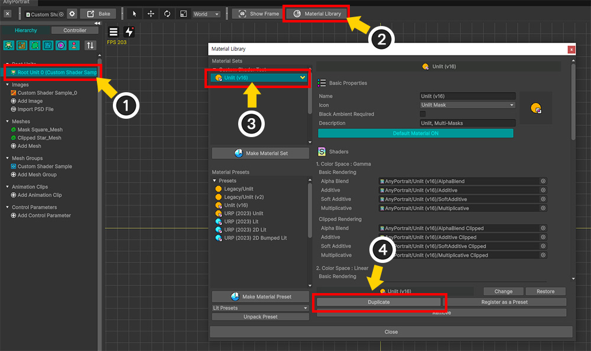
作成した「カスタムシェーダ」を適用しましょう。
(1) 「ルートユニット」を選択します。
(2) 「Material Library」ボタンを押します。
(3) 「Unlit マテリアルセット」を選択します。
(4) 「Duplicate」ボタンを押します。
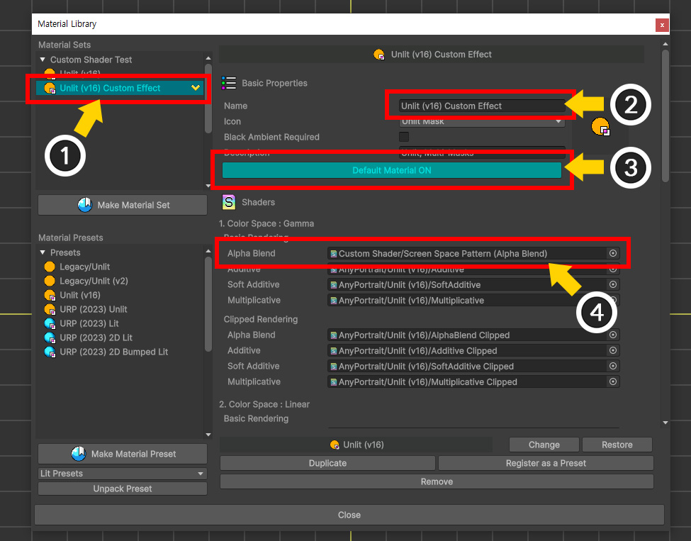
(1) 「複製されたマテリアルセット」を選択します。
(2) マテリアルセットの名前を適切に変更します。
(3) 「Default Material」ボタンを押して「ON」状態に切り替えます。
(4) 「Alpha Blend」シェーダを、先ほど作成した「カスタムシェーダ」に変更します。
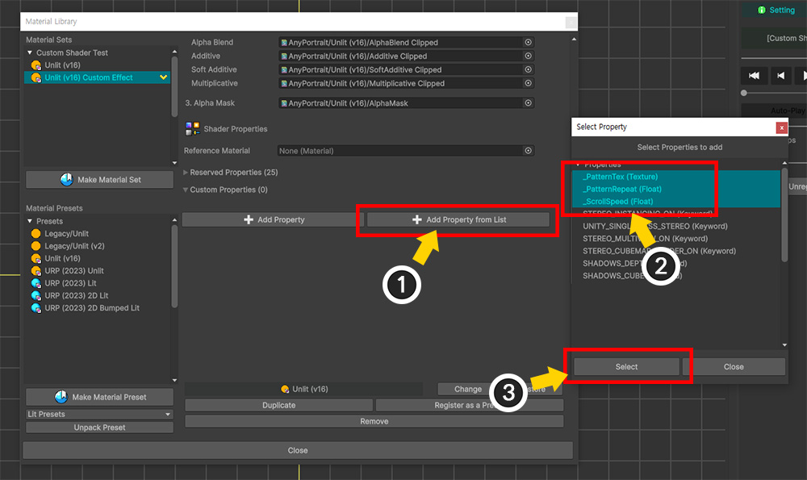
「カスタムシェーダ」のプロパティを「マテリアルセット」に追加する必要があります。
(1) 下にスクロールして「Add Property from List」ボタンを押します。
(2) カスタムシェーダで作成された「_PatternTex、_PatternRepeat、_ScrollSpeed」プロパティを Ctrl キーを押してすべてを選択します。
(3) 「Select」ボタンを押します。
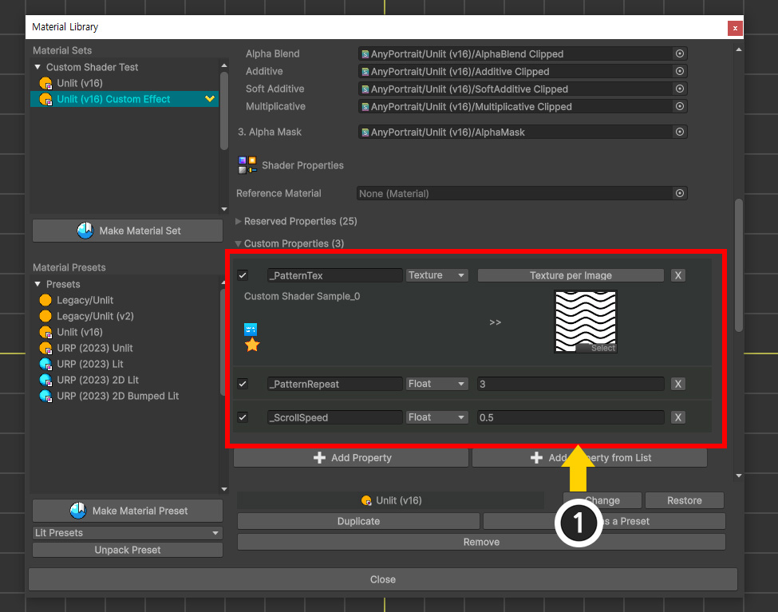
(1) パターンテクスチャとパターン繰り返し値、スクロール速度を入力します。
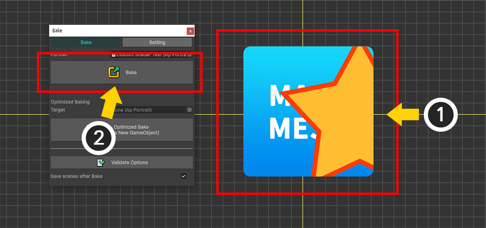
(1) AnyPortrait エディタではカスタムシェーダが動作しません。
(2) 「Bake」を実行してUnityシーンで確認してみましょう。
カスタムシェーダによってパターンテクスチャがメッシュに適用されたことがわかります。
ところで、このパターンテクスチャによって波状に透明になった部分がクリッピングには反映されないことがわかります。
これは、カスタムシェーダのパターン関連コードが「アルファマスクシェーダ」には存在しないためです。
カスタムシェーダの内容をマスクに反映するためには、「アルファマスクシェーダ」も「カスタムシェーダ」として書き換える必要があります。
「カスタムマスクシェーダ」を次のように作成しましょう。
Shader "Custom Shader/Screen Space Pattern (Alpha Mask)"
{
Properties
{
_Color ("Color (Alpha)", Color) = (0.5, 0.5, 0.5, 1.0)
_MainTex ("Main Texture (RGBA)", 2D) = "white" {}
_PatternTex ("Pattern Texture (Grayscale)", 2D) = "white" {}
_PatternRepeat ("Pattern Repeat", float) = 1.0
_ScrollSpeed ("Scroll Speed", float) = 0.2
}
SubShader
{
Tags { "RenderType"="Transparent" "Queue" = "Transparent" "PreviewType" = "Plane" }
Blend SrcAlpha OneMinusSrcAlpha
ZWrite Off
Cull Off
LOD 200
Pass
{
CGPROGRAM
#pragma vertex vert
#pragma fragment frag
#include "UnityCG.cginc"
struct appdata
{
float4 vertex : POSITION;
float2 uv : TEXCOORD0;
};
struct v2f
{
float2 uv : TEXCOORD0;
float4 vertex : SV_POSITION;
// スクリーン効果のためのUV
float4 screenUV : TEXCOORD1;
};
sampler2D _MainTex;
float4 _MainTex_ST;
float4 _Color;
// パターンテクスチャとスクロール速度変数
sampler2D _PatternTex;
float _PatternRepeat;
float _ScrollSpeed;
v2f vert (appdata v)
{
v2f o;
o.vertex = UnityObjectToClipPos(v.vertex);
o.uv = TRANSFORM_TEX(v.uv, _MainTex);
// 画面UVの計算
o.screenUV = ComputeScreenPos(o.vertex);
return o;
}
fixed4 frag (v2f i) : SV_Target
{
fixed4 col = tex2D(_MainTex, i.uv);
// アルファマスク演算（White + Alpha）
col.rgb = fixed3(1.0f, 1.0f, 1.0f);
col.a = saturate(col.a * _Color.a);
// 時間とともに横に動くパターン画像
float2 screenUV = i.screenUV.xy / i.screenUV.w;
screenUV.x *= _PatternRepeat;
screenUV.y *= _PatternRepeat;
screenUV.x += _Time.y * _ScrollSpeed;
fixed pattern = tex2D(_PatternTex, screenUV).r;
col.a *= pattern;
return col;
}
ENDCG
}
}
}
カスタムシェーダーで作成された上記の「アルファマスクシェーダー」を見ると、通常のシェーダーの内容と似ています。
違いは、RGBチャンネルの結果が「白(1、1、1)」であることです。
それでは、この「カスタムマスクシェーダー」を適用してみましょう。
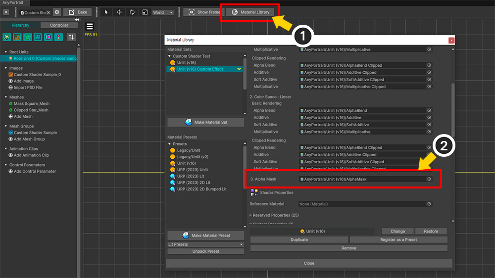
非常に特殊でないカスタムシェーダは、「マスク設定ダイアログ」ではなく「マテリアルライブラリ」で設定することも可能です。
すべてのクリッピングメッシュに共通に適用されるシェーダの場合は、上記のように「マテリアルライブラリ」の「Alpha Mask」項目にシェーダを入力します。
設定すると、「マスク設定ダイアログ」で「Shader Type」を「Alpha Mask」に設定したときに、そのシェーダが使用されます。
ただし、このページではこの方法については扱いません。
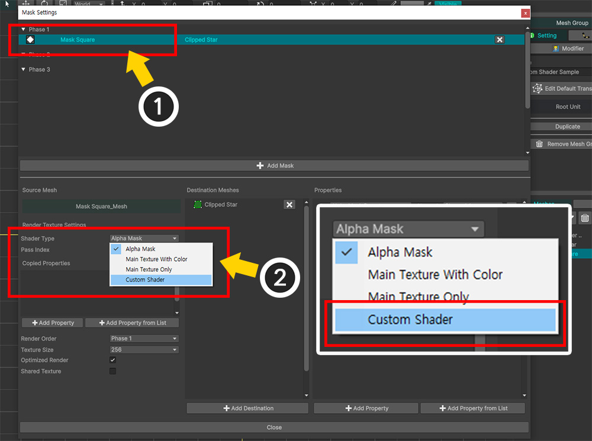
(1) 「マスク設定ダイアログ」を開き、「マスクデータ」を選択します。
(2) 「Shader Type」の値を「Custom Shader」に変更します。
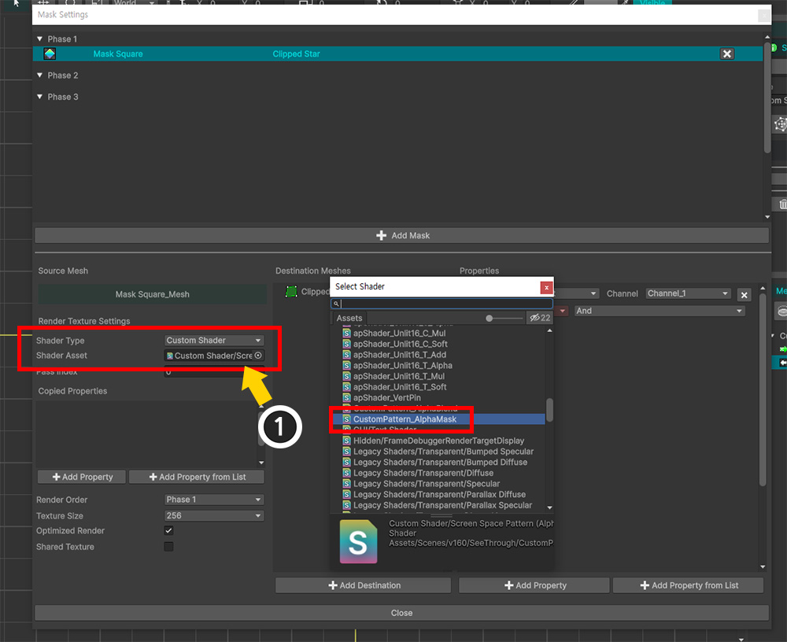
(1) 「Shader Type」を「Custom Shader」に変更すると、「Shader Asset」というオプションが登場します。
ここに先ほど作成した「カスタムマスクシェーダ」を入力します。
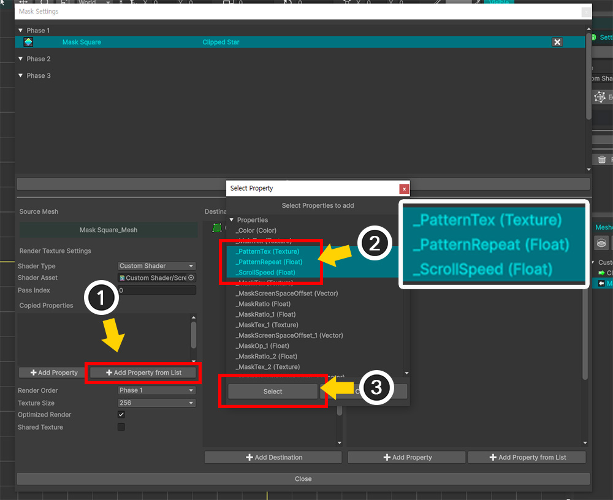
カスタムプロパティ「_PatternTex」、「_PatternRepeat」、「_ScrollSpeed」の値を元のシェーダからコピーし、「カスタムマスクシェーダ」として入力する必要があります。
(1) 「Add Property from List」ボタンを押します。
(2) Ctrl キーを押しながら「_PatternTex、_PatternRepeat、_ScrollSpeed」をすべて選択します。
(3) 「Select」ボタンを押します。
メモ
追加したいプロパティがリストにない場合は、そのシェーダが適用された「マテリアルセット」が「Default Material」として設定されていない可能性があります。
「マテリアルライブラリ」でご確認ください。
あるいは、「Add Property」ボタンを押してプロパティ名を直接入力することもできます。
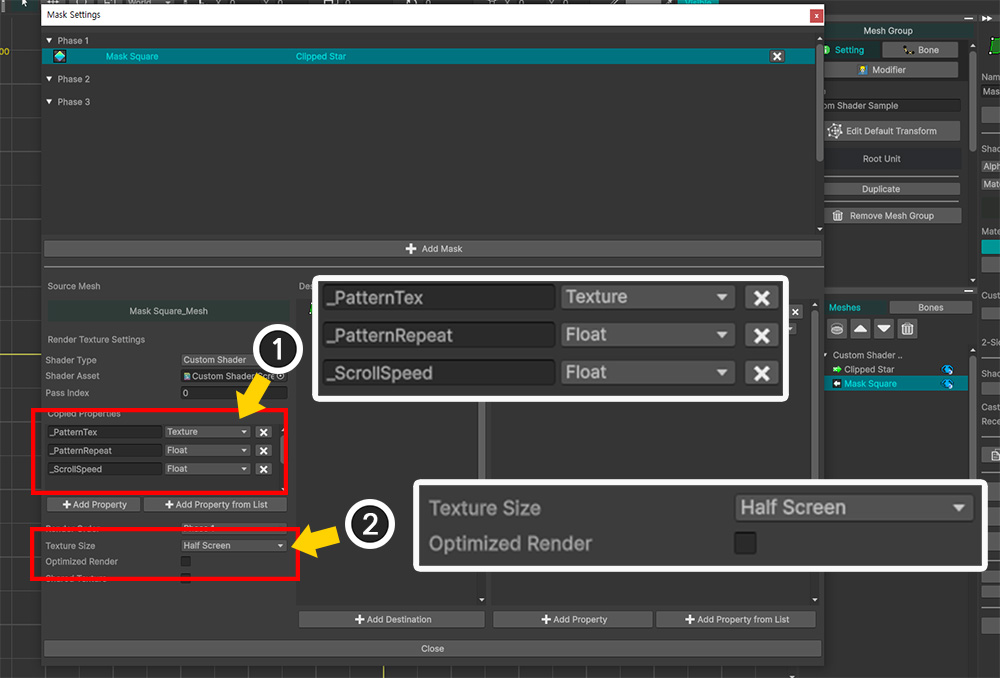
(1) 一般シェーダからコピーされるプロパティが登録されていることがわかります。各項目は、「プロパティ名」と「値の種類」、「削除ボタン」で構成されます。
(2) このカスタムシェーダは「画面座標系」を利用するため、「クリッピングマスク最適化機能」を使用しないでください。 （関連ページ）
「Optimized Render」のチェックを外し、「Texture Size」が適度に大きい値になるように変更します。
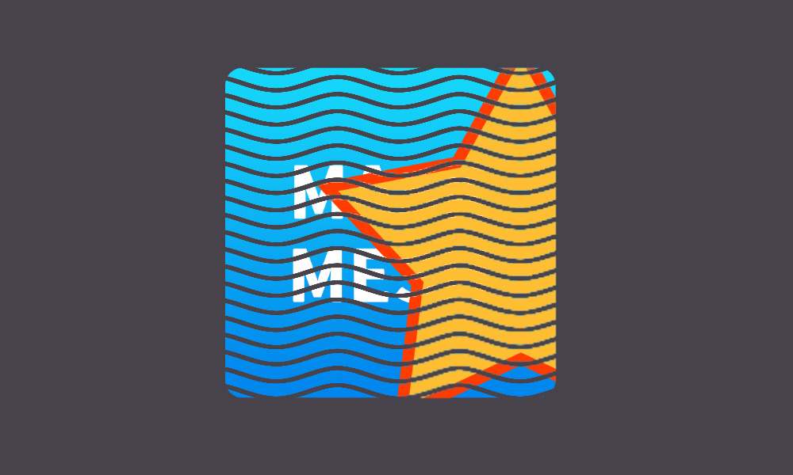
「Bake」をしてUnityシーンで確認してみると、カスタムシェーダのパターンテクスチャ効果がマスクにも適用されたことがわかります。
カスタムクリッピングシェーダー
これまでのプロセスは、「マスク作成プロセスでカスタムシェーダを適用する」ことでした。
今回は「生成されたマスクを受けてクリッピングレンダリングを行う過程」にカスタムシェーダを作成して適用しましょう。
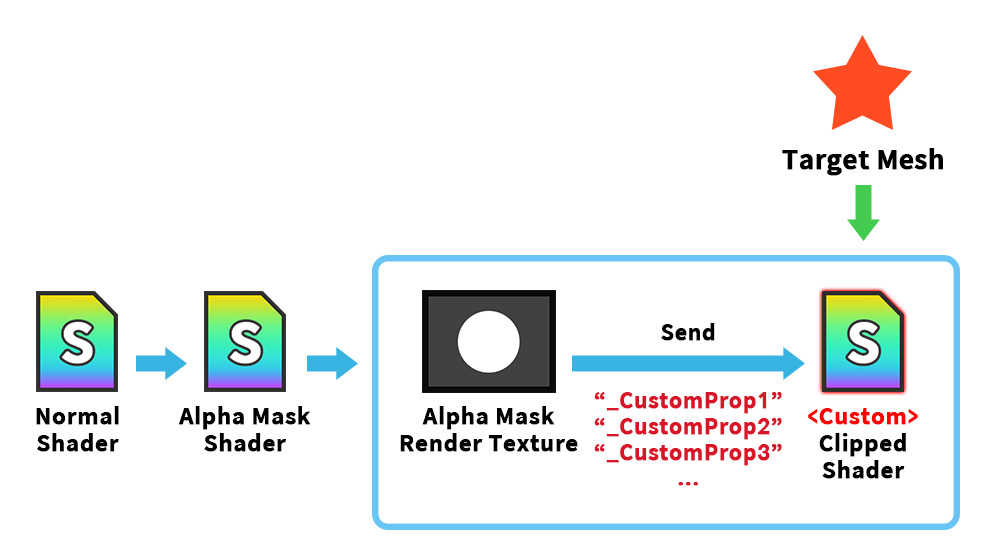
「マスクレンダーテクスチャ」は、クリッピングされるターゲットメッシュに渡され、これを「クリッピングシェーダ（Clipped Shader）」が受け取り、クリッピング処理を実行します。
ここでは、「クリッピングシェーダ」を「カスタムシェーダ」として作成することも可能です。
通常、「カスタムクリッピングシェーダ」を設定する作業は、「マテリアルライブラリ」で行われ、完了します。
ここで考慮する必要があるのは、「カスタムクリッピングシェーダ」がマスクに関連する特別なプロパティ値を必要とする場合です。
「マテリアルライブラリ」では、マスクデータとは無関係の値がカスタムプロパティに渡されるように設定できます。
ただし、マスクデータに関連する値を渡すには、「マスク設定ダイアログ」で設定する必要があります。
今回の例では、「マスクを受けてAlphaを変えずにマスクの外側に指定された色に変更」する効果を持つ「カスタムクリッピングシェーダ」を作成して適用してみます。
具体的には、クリッピングに関連するすべてのプロパティをユーザーがランダムにするという前提でシェーダを作成しましょう。
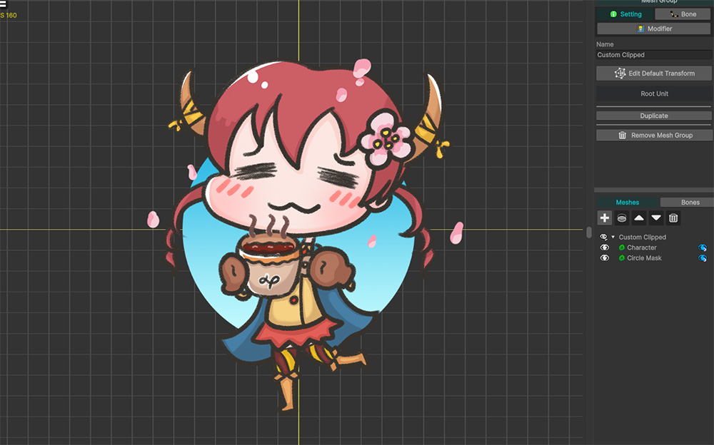
この例で使用されるメッシュです。
フロントにはきれいなキャラクターが描かれた「Character」メッシュがあり、後ろには水色の「Circle Mask」メッシュがあります。
後ろの「Circle Mask」がマスクを作成して「Character」メッシュに渡すと、マスクと重ならないところの色が変わるようにしましょう。
このような効果を作るために、「カスタムクリッピングシェーダ」を次のように作成してみました。
Shader "Custom Shader/Reverse Color"
{
Properties
{
_Color ("2X Color (RGBA Mul)", Color) = (0.5, 0.5, 0.5, 1.0)
_MainTex ("Main Texture (RGBA)", 2D) = "white" {}
// カスタムマスクと色
_CustomMask ("Custom Mask (A)", 2D) = "white" {}
_CustomMaskSSOffset ("Custom Mask Screen Space Offset (XY_Scale)", Vector) = (0, 0, 0, 1)
_CustomColor ("Custom Color by Mask (RGB)", Color) = (1, 1, 1, 1)
}
SubShader
{
Tags { "RenderType" = "Transparent" "Queue" = "Transparent" "PreviewType" = "Plane" }
Blend SrcAlpha OneMinusSrcAlpha
ZWrite Off
LOD 200
Pass
{
CGPROGRAM
#pragma vertex vert
#pragma fragment frag
#include "UnityCG.cginc"
struct appdata
{
float4 vertex : POSITION;
float2 uv : TEXCOORD0;
};
struct v2f
{
float2 uv : TEXCOORD0;
float4 vertex : SV_POSITION;
// クリッピング操作のためのUV
float4 screenPos : TEXCOORD1;
};
sampler2D _MainTex;
float4 _MainTex_ST;
half4 _Color;
// カスタムマスクプロパティ変数
sampler2D _CustomMask;
float4 _CustomMaskSSOffset;
float4 _CustomColor;
// マスク関数:レンダリングテクスチャUV計算
float2 GetMaskScreenUV (float2 screenUV, float4 offset)
{
float2 result = screenUV - float2(0.5f, 0.5f);
result.x *= offset.z;
result.y *= offset.w;
result.x += offset.x * offset.z;
result.y += offset.y * offset.w;
result += float2(0.5f, 0.5f);
return result;
}
v2f vert (appdata v)
{
v2f o;
o.vertex = UnityObjectToClipPos(v.vertex);
o.uv = TRANSFORM_TEX(v.uv, _MainTex);
// クリッピングマスクUV計算のための画面UV
o.screenPos = ComputeScreenPos(o.vertex);
return o;
}
fixed4 frag (v2f i) : SV_Target
{
fixed4 col = tex2D(_MainTex, i.uv);
#if UNITY_COLORSPACE_GAMMA
col.rgb *= _Color.rgb * 2.0f;
#else
col.rgb *= _Color.rgb * 4.595f;
col.rgb = pow(col.rgb, 2.2f);
#endif
col.a *= _Color.a;
// カスタムクリッピングマスクの計算
float2 screenUV = i.screenPos.xy / max(i.screenPos.w, 0.0001f);
float alphaMask = tex2D(_CustomMask, GetMaskScreenUV(screenUV, _CustomMaskSSOffset)).r;
// マスク反転後、指定された色で補間
alphaMask = saturate(1.0f - alphaMask);
col.rgb = lerp(col.rgb, _CustomColor.rgb, alphaMask);
return col;
}
ENDCG
}
}
}
このカスタムシェーダは、「_CustomMask、_CustomMaskSSOffset、_CustomColor」プロパティでマスクデータを受け取り、レンダリングします。
アルファマスクの値を受け取り、「alphaMask」変数に保存した後、これをAlphaチャンネルに乗算せずに色演算の補間値として使用しました。
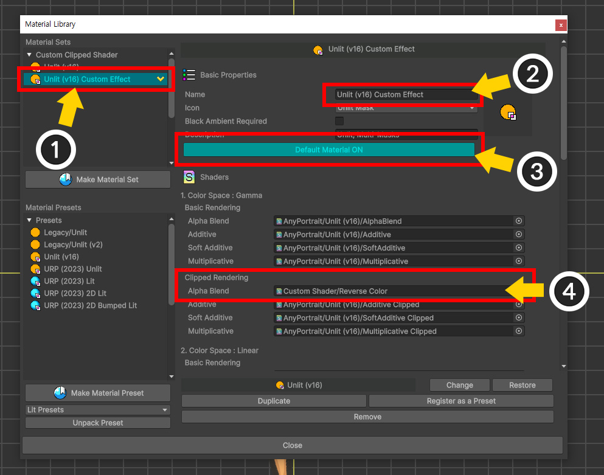
作成した「カスタムクリッピングシェーダ」を適用しましょう。
(1) 「マテリアルライブラリ」を開き、クリッピングシェーダを適用するための「マテリアルセット」を作成または複製します。
(2) 「マテリアルセット」を選択し、名前を設定します。
(3) 「Default Material」ボタンを押して「ON」状態にします。
(4) 「Clipping Rendering」の「Alpha Blend」項目のシェーダーの前に作成した「カスタムシェーダー」を入力します。
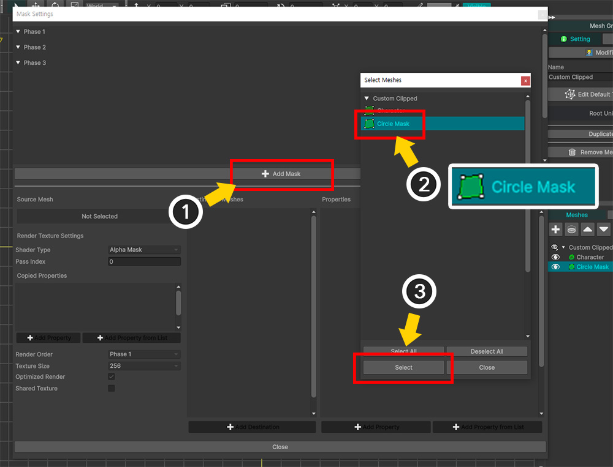
それでは、「マスクデータ」を作成しましょう。
(1) 「マスク設定ダイアログ」を開き、「Add Mask」ボタンを押します。
(2) マスクメッシュとなる「Circle Mask」メッシュを選択します。
(3) 「Select」ボタンを押します。

(1) 作成した「マスクデータ」を選択します。
(2) 「Texture Size」を適切に設定します。
(3) クリッピングとなる「Character」メッシュを登録します。

これで、ターゲットメッシュにマスクデータを渡すためにプロパティを追加する必要があります。
前の例では「Alpha Mask Preset」方式のプロパティを利用していましたが、ここではカスタムシェーダのプロパティに合わせて設定する必要があります。
(1) 「Add Property from List」ボタンを押します。
(2) カスタムシェーダのプロパティ「_CustomMask、_CustomMaskSSOffset、_CustomColor」を Ctrl キーを押してすべてを選択します。
(3) 「Select」ボタンを押します。
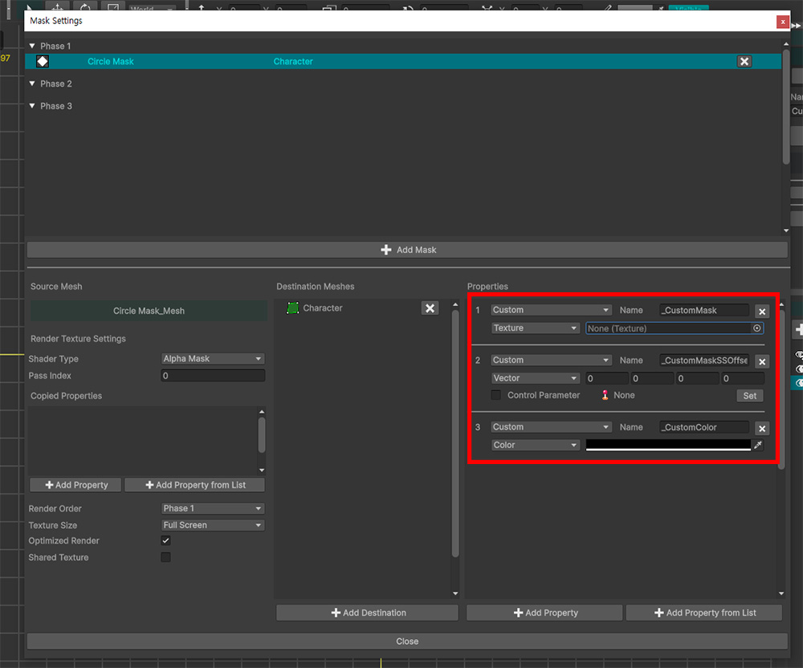
選択したプロパティがマスクデータに登録されました。
これで、登録されたプロパティを介してマスクデータがクリッピングメッシュに渡されます。
現在は各プロパティの名前とタイプだけが設定されており、どの値が渡されるかは設定されていません。
プロパティの値を設定する前に、このUIがどのように設定されているかを見てみましょう。
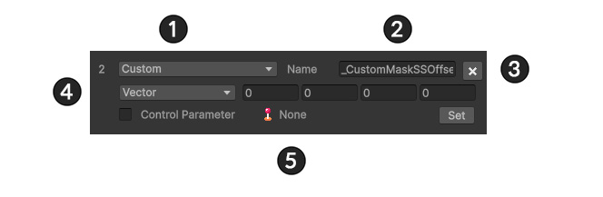
1. プリセットタイプ：プロパティ情報をプリセット形式で設定できます。
2. プロパティ名：シェーダ内で定義されたプロパティの名前です。
3. 削除ボタン：プロパティ情報を削除します。
4. プロパティのタイプと値：プロパティの値のタイプを設定し、渡される値を指定します。
5. 連動制御パラメータ：一部のプロパティタイプは制御パラメータを連結して値をリアルタイムで制御できます。
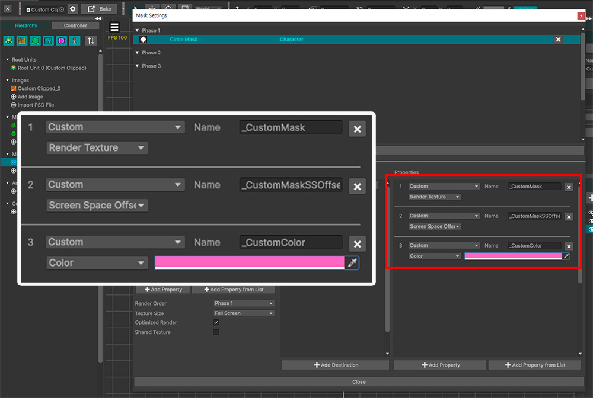
プロパティのタイプと値を適切に設定します。
この例では、プロパティごとに次のように設定しました。
1. _CustomMask
：「Render Texture」タイプに設定しました。
「Render Texture」タイプは、「マスクレンダーテクスチャ」をクリッピングメッシュに渡します。
2. _CustomMaskSSOffset
：「Screen Space Offset」タイプに設定しました。
「Screen Space Offset」タイプは、「マスクレンダーテクスチャ」の「UV」を計算するために生成された「Vector」タイプの値をクリッピングメッシュに渡します。
「Screen Space Offset」の値を利用するコードについては、上記の「カスタムクリッピングシェーダ」の「GetMaskScreenUV」関数を参照してください。
3. _CustomColor
：「Color」タイプに設定し、カラー値は「ピンク」を設定しました。
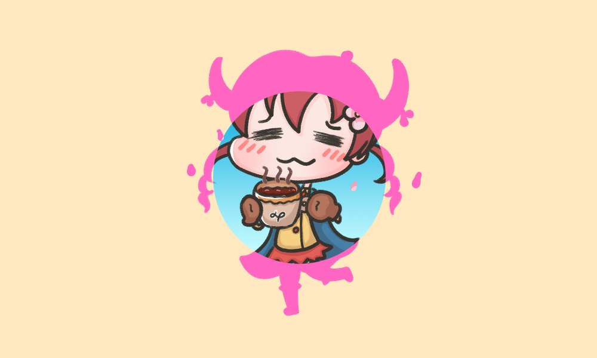
「Bake」をしてUnityシーンで確認すると、上記のような結果を見ることができます。
カスタムシェーダによって、「クリッピング領域ではない部分がピンク色でレンダリング」された結果が表示されます。